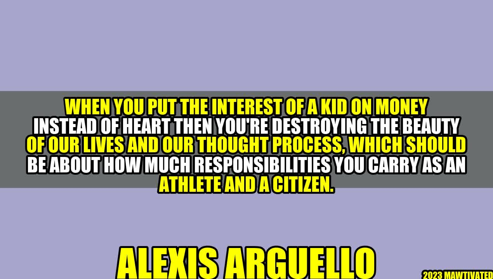

How Placing Money Over Heart in Athletes' Development Harms Society

Once upon a time, there was a young football player named Mia. Her coach saw potential in her, so she was drafted to join the team. Mia soon discovered that her coach was only interested in making a profit instead of nurturing her talents. He pushed her to practise relentlessly, leaving her injured and exhausted. She lost her passion for the game and eventually quit.
"When you put the interest of a kid on money instead of heart then you're destroying the beauty of our lives and our thought process, which should be about how much responsibilities you carry as an athlete and a citizen." - Alexis Arguello
Many athletes, like Mia, have fallen prey to coaches or other influential people who prioritize profit over heart. To fully grasp the gravity of this issue, it is vital to understand the story of Alexis Arguello. He was a Nicaraguan boxer who had a successful career, winning multiple championship titles in three different weight classes. However, despite his success, he remained humble and empathetic towards the less fortunate. After retirement, he entered politics to effect positive change in his country. Sadly, he lost an election and, a few months after, died by suicide. It was speculated that he suffered from depression due to his political loss.
Although Arguello's tragic end was not attributed to his experiences during his boxing career, it raises an important question: what could have been done differently to prevent such circumstances?
The Effects of Prioritizing Money Over Heart
Placing money over heart can be detrimental to an athlete's overall development. Here are some reasons why:
- Removes Joy and Passion: When money is the primary motivator, athletes are training to earn rather than for the love of the sport. Waking up early for training sessions and pushing through injuries become burdensome instead of something worth doing. Over time, the joy and passion for the game is depleted, leading to lacklustre performances, early retirements, or, worst of all, quitting.
- Injuries and Poor Health: Coaches who value profits over athletes' wellbeing will push them harder than necessary to achieve results. Alternatively, they may not prioritize proper rest and recovery, leading to burnout, injuries, or worse health outcomes in the long run.
- Impaired Moral Judgment: Athletes who only care about money may do whatever it takes to earn a quick buck. This could mean using performance-enhancing drugs, ignoring team loyalty for better sponsorships, or other behaviours that compromise the integrity of the sport. The consequences of such decisions could lead to fines, disqualifications, or being completely banned from future events.
Examples of Athletes Affected by Prioritizing Money
The issue of prioritizing money over heart is not uncommon. Here are some examples:
- Allen Iverson, Basketball: Known for his exceptional talent on the basketball court, Allen Iverson was one of the stars during his career. However, towards the end of his career, things took a turn for the worse. Iverson's behaviour on and off the court became increasingly erratic, leading to strained relationships with his team and coaches. Combined with his reported gambling problems, it was clear that he was chasing money instead of playing for the love of the game.
- Lance Armstrong, Cycling: Lance Armstrong was a seven-time Tour de France winner. However, in 2012, he was stripped of his titles and banned from competing professionally after an investigation found out that he had used performance-enhancing drugs throughout his career. He made millions of dollars from endorsements throughout his career, and it was evident that money was more important than fair play.
- Adam Silver, Commissioner of the NBA: In an interview with Sports Illustrated, Silver admitted that he was concerned about the unhealthy emphasis put on money in today's sports. He said, "Our players are heroes, and some [owners] see them just as an investment. We need to balance the commercial realities with traditional values of the game."
Conclusion
It is time to put heart back in the game. Prioritizing money over athletes' wellbeing is not a sustainable or ethical approach. If we want future generations to be empathetic and responsible citizens, then emphasis must be placed on developing character alongside sporting skills. Here are three takeaways:
- Athletes who are motivated by the love of the game are likely to have better long-term outcomes than those who only care about money
- Organizations and institutions need to create policies that align with the well-being of athletes and not just the bottom line.
- Parents, coaches, and other influential individuals need to prioritize their duty of care towards athletes, instead of fuelling their financial gain. This means providing adequate support and encouragement, even if it may not lead to immediate results.
Practical Tips to Nurture Athletes' Development
- Encourage athletes to participate in team-building and community engagement activities
- Provide educational opportunities to expand an athlete's horizons outside of their particular sport
- Prioritize physical and mental health by providing access to high-quality rest, recovery, and therapy
Hashtags
#heartinthegame #noblueno #nogolddigger #playforyou #developtheplayer
SEO Keywords
heart, game, player, athlete, development, profit, responsibility, well-being, morality, sustainability, future
Category
Sports and Society
Curated by Team Akash.Mittal.Blog
Curated by Team Akash.Mittal.Blog
Share on Twitter Share on LinkedIn